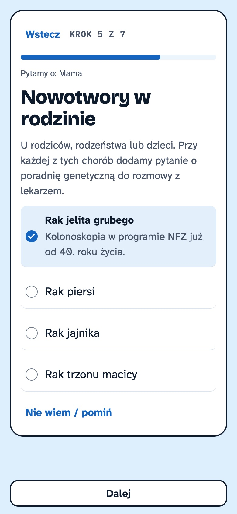
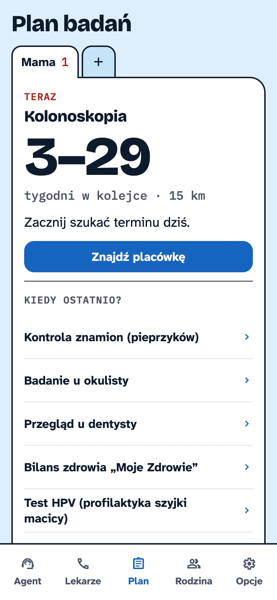
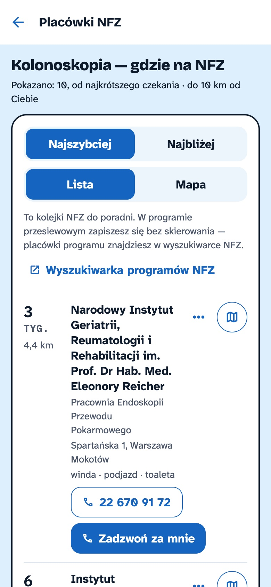
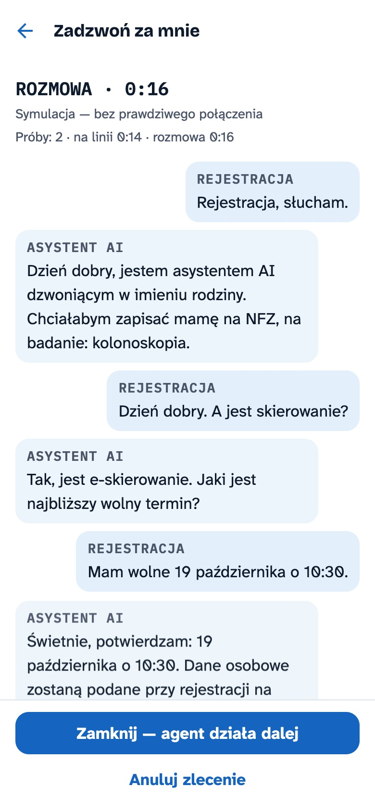
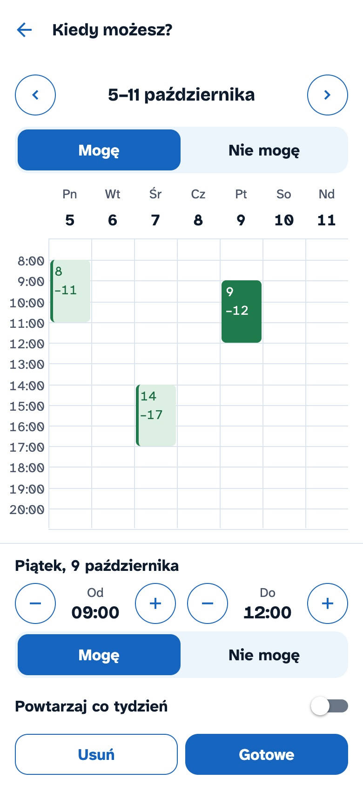
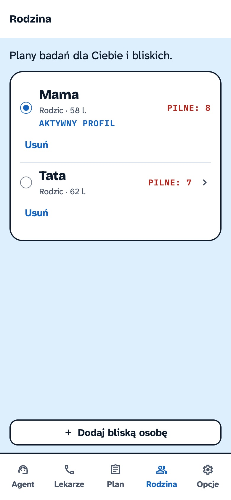
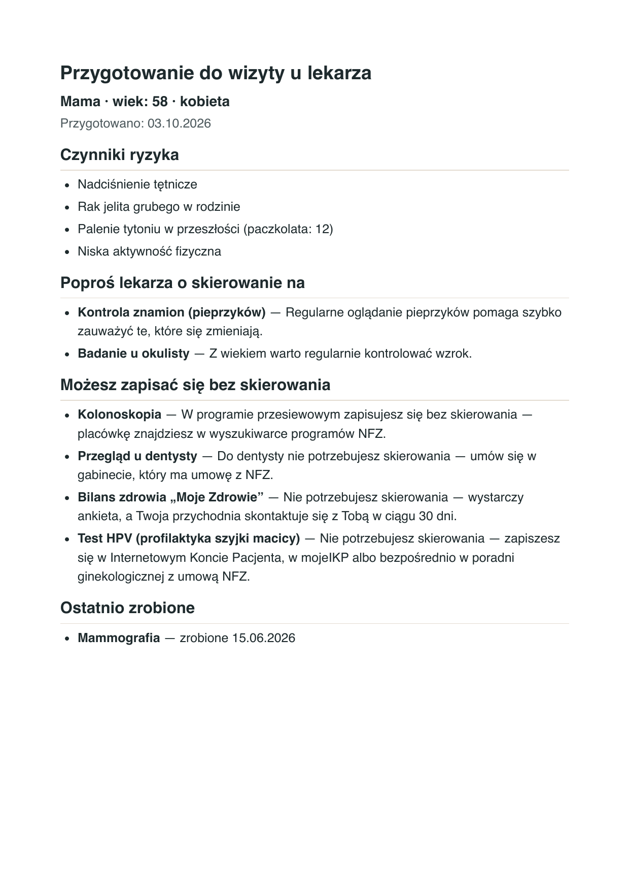
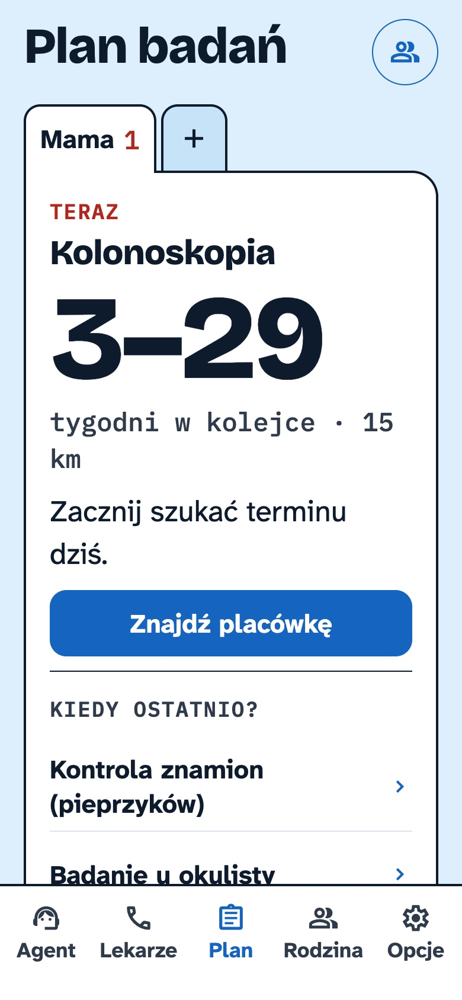
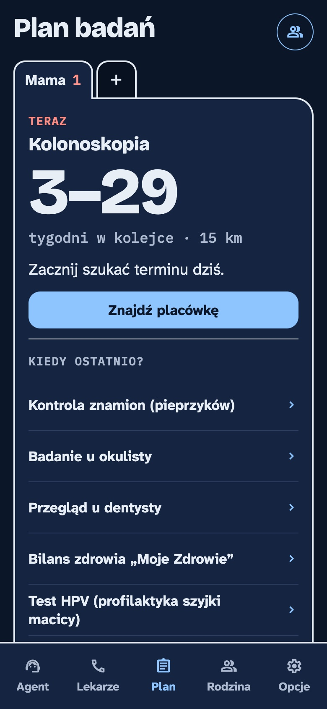

HackYeah 2026 · Sport & Healthcare
Wiesz co, kiedy i gdzie — zanim będzie za późno.
Zespół {NAZWA ZESPOŁU}
{imiona członków zespołu}
KolonoskopiaPilne
29Tygodni w kolejce · 15 km
Zacznij szukać terminu dziś. Znajdź placówkęUmówione
Później
Problem
pracuje, „ogarnia” zdrowie mamy
nie pamięta dat badań, w rodzinie był rak jelita grubego
Rozwiązanie
Indywidualne badania z uzasadnieniem i źródłem
Przypomnienie z wyprzedzeniem szacowanym z kolejek NFZ w okolicy
Placówki, gdzie czeka się najkrócej
Agent AI dzwoni do rejestracji i umawia termin w godzinach, które Ci pasują
Jak to działa

1. Ankieta

2. Plan: co i kiedy

3. Gdzie najszybciej

4. Agent AI dzwoni, transkrypcja na żywo

5. Termin w kalendarzu
Nasz wyróżnik
Szacunek z kolejek NFZ w Twojej okolicy: średni czas oczekiwania raportowany przez placówki (co miesiąc). Bierzemy ostrożnie p75 — u 3 na 4 placówek średnie czekanie jest krótsze. Przykład z demo: kolonoskopia w poradniach w okolicy — ok. 29 tyg., więc przypomnienie przychodzi z takim wyprzedzeniem. Badania w programach (mammografia, HPV, LDCT) i bilans: stałe 21 dni wyprzedzenia.
Demo
29tyg. w kolejce
| Doctor Robert | IKP / mojeIKP | ||
|---|---|---|---|
| Plan badań wg profilu | ✓ | ✓ jednorazowy bilans | ✓ ciągły plan |
| Przypomnienia o badaniach | ✓ | ? (leki, wizyty) | ✓ |
| Kolejki NFZ | ? | ✓ osobno, na portalu | ✓ w planie |
| Wskazanie placówek | ✗ w planach | ✓ e-rejestracja | ✓ |
| Profile rodzinne / opiekun | ? | ✓ dzieci, upoważnienia | ✓ |
| Umawia wizytę za Ciebie | ✗ w planach | ? tylko samodzielna e-rejestracja | ✓ agent AI |
| „Kiedy zacząć” = plan × kolejka | ✗ | ✗ | ✓ |
Dla opiekunów


Design i dostępność
Standard

Tryb senior

Dark mode
Technologia
Wdrożenie i roadmap
✓ Teraz — MVP
◆ Dalej
■ Model
Sprawdź sam
Demo w przeglądarce
Na telefonie
Kod
Aplikacja przypomina i edukuje — nie diagnozuje.